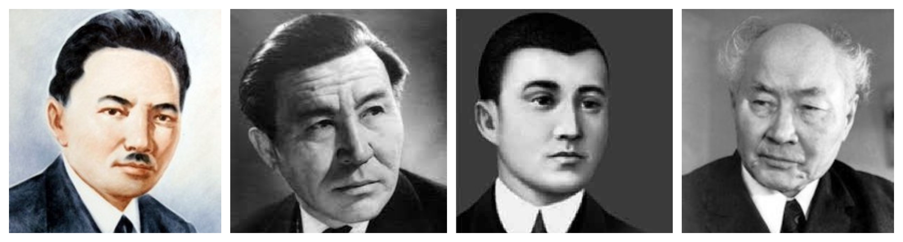
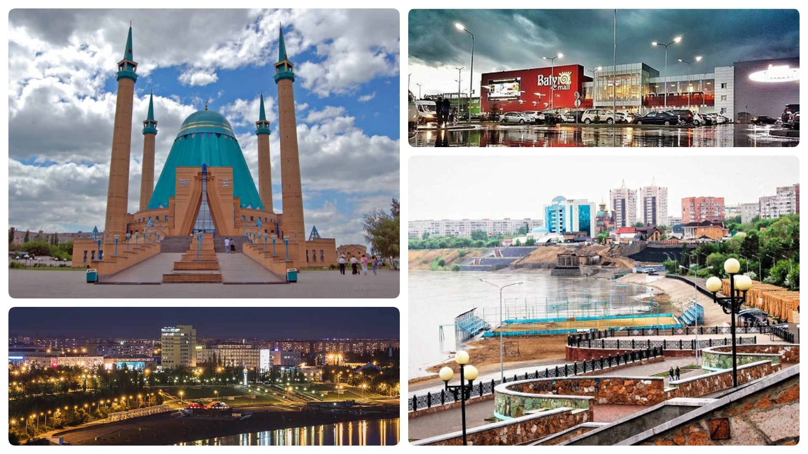

PAVLODAR
Welcome to the page of the greatest city in Kazakhstan!
About Pavlodar
Pavlodar is a city located in northeastern Kazakhstan.
As of 2010, the city had a population of 331,710.
The population of Pavlodar mainly consist of Kazakhs, Russians and Ukrainian, German and Tatar minorities
For more information about the city Click ME!
Famous personalities come from Pavlodar:
- Shaken Kenzhetaiuly Aimanov - a well-known Kazakh actor and director. People's artist of the USSR since 1964. He was born and raised in Bayanaul District of Pavlodar region.
- Satpayev Kanysh Imantayevich - geologist, doctor of mineralogical sciences, professor, academician. The first academician of Kazakh origin.
- Sultanmahmut Toraygirov- Kazakh poet, educator-Democrat
- Zhussipbek Aymauytov - an outstanding Kazakh writer, playwright, publicist, one of the founders of Kazakh literature.

Top 5 must-visit places of Pavlodar!
- Batyr Mall
- Mashhur Zhusup mosque
- Promenade
- Pavlodar Regional Museum of Local Lore n. G.N.Potanin"
- Festival Cinema

Explore more about the economics of the city
Economics of Pavlodar